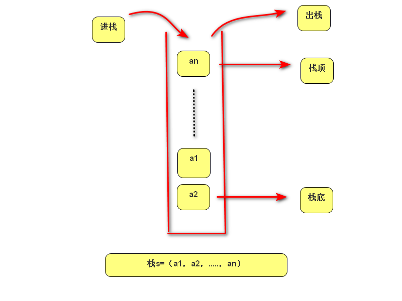
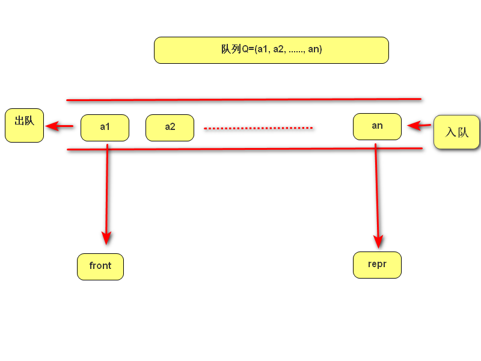
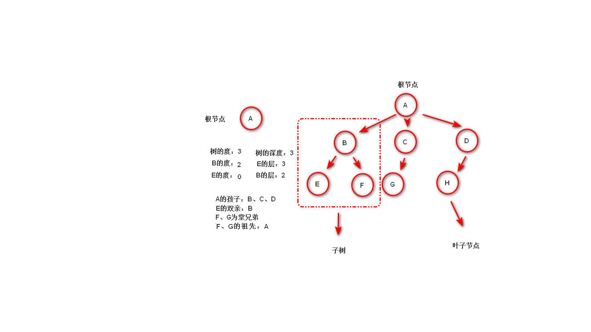

通过一一对应的方式，形成映射
即线性表中各元素依次存储于内存中一整片连续的存储空间中（如列表）
即线性表中各元素分布存储于内存的不连续空间中，每个元素称为节点，每个节点都有指向下一个节点的引用
class Node01:
def __init__(self, value, next_node=None):
self.value = value
self.next_node = next_node
# 此为正向，也可逆向，此处略
class NodeList01:
def __init__(self):
self.head = Node01(None)
# 只存储起始节点，之后一切操作基于起始节点
def list_init(self, list_):
tail = self.head
for item in list_:
tail.next_node = Node01(item)
tail = tail.next_node
def show(self):
tail = self.head.next_node
while tail is not None:
print(tail.value)
tail = tail.next_node
def insert(self, index, value):
new_node = Node01(value)
tail = self.head
for item in range(index):
if tail.next_node:
tail = tail.next_node
else:
break
new_node.next_node = tail.next_node
tail.next_node = new_node
def delete(self, value):
tail = self.head.next_node
while tail.next_node and (f'{tail.next_node.value}' != f'{value}'):
tail = tail.next_node
if not tail.next_node:
raise ValueError
else:
tail.next_node = tail.next_node.next_node
def get_index(self, index):
tail = self.head.next_node
for item in range(index):
if tail.next_node:
tail = tail.next_node
else:
raise IndexError
if index >= 0:
return tail.value
raise IndexError
栈是只能在一端（栈顶）进行插入，删除等操作的线性表（堆栈），另一端固定的称为栈底，当栈中元素为空时，称为空栈

包含入栈（压栈），出栈（弹栈），判断栈的空满等操作
class SStack:
def __init__(self):
self.stack_ = []
def is_empty(self):
return len(self.stack_) == 0
def push(self, item):
self.stack_.append(item)
def pop(self):
if self.is_empty():
raise IndexError
return self.stack_.pop()
def top(self):
if self.is_empty():
raise IndexError
return self.stack_[-1]
class Node01:
def __init__(self, value, next_node=None):
self.value = value
self.next_node = next_node
class ChainStack:
def __init__(self):
self.top = None
def is_empty(self):
return self.top
def push(self, item):
self.top = Node01(item, self.top)
def pop(self):
if not self.is_empty():
raise IndexError
temp = self.top
self.top = self.top.next_node
return temp
def top_show(self):
if self.is_empty():
raise IndexError
return self.top
限制在两端进行插入、删除等操作的线性表，允许插入的称为队尾，允许删除的称为队首（队头）

包含入队，出队，判断队列空满等操作
class SQueue:
def __init__(self, length=10):
self.items = []
self.length = length
def enqueue(self, item):
if self.is_full():
raise IndexError
self.items.append(item)
def dequeue(self):
if self.is_empty():
raise IndexError
return self.items.pop(0)
def is_empty(self):
return len(self.items) == 0
def is_full(self):
return len(self.items) >= self.length
class Node01:
def __init__(self, value, next_node=None):
self.value = value
self.next_node = next_node
# 有首位两个指针，首指针指向的是出列的，尾指针指向的是入列的，二者重合代表队列为空（其实留了一个元素）
class CQueue:
def __init__(self, len_max=10):
self.head = self.tail = Node01(None)
# 先指向一个空的节点，方便后续移动
self.len_max = len_max + 1
def is_empty(self):
return self.head == self.tail
def is_full(self):
return self.tell_len() >= self.len_max
def tell_len(self):
len_ = 0
temp = self.head
while True:
try:
temp = temp.next_node
except AttributeError:
return len_
len_ += 1
def enqueue(self, value):
if self.is_full():
raise IndexError
self.tail.next_node = Node01(value)
self.tail = self.tail.next_node
def dequeue(self):
if self.is_empty():
raise IndexError
self.head = self.head.next_node
return self.head.value
树是有n个节点的有限集合T，有且只有一个根节点，其余节点可以分为m个互不相交的有限集合，其中每一个集合都是一个数，并称为其根的子树

每个节点最多有左右两个孩子的树
如下
class BinaryTreeNode:
def __init__(self, val, left_node=None, right_node=None):
self.value = val
self.left_node = left_node
self.right_node = right_node
class BinaryTree:
def __init__(self, value=None):
self.root_ = BinaryTreeNode(value)
self.layer_list = [self.root_]
# 用来记录还有空余的节点
self.dir = -1
# 用来记录第一个空余节点的左右孩子的赋值情况
def add_node(self, *args):
for item01 in range(len(args)):
if self.dir == -1:
temp = self.layer_list[0].left_node = BinaryTreeNode(args[item01])
# 左孩子赋值
else:
temp = self.layer_list[0].right_node = BinaryTreeNode(args[item01])
# 右孩子赋值
del self.layer_list[0]
# 清空赋值满的节点
self.dir = -self.dir
# 表示节点的空满情况
self.layer_list.append(temp)
# 增加新节点
@staticmethod
def preorder(root_):
if root_ is None:
return
print(root_.value, end=' ')
# 打印根节点
BinaryTree.preorder(root_.left_node)
# 走左支
BinaryTree.preorder(root_.right_node)
# 走右支
@staticmethod
def postorder(root_):
if root_ is None:
return
BinaryTree.postorder(root_.left_node)
# 走左支
BinaryTree.postorder(root_.right_node)
# 走右支
print(root_.value, end=' ')
# 打印根节点
@staticmethod
def in_order(root_):
if root_ is None:
return
BinaryTree.in_order(root_.left_node)
# 走左支
print(root_.value, end=' ')
# 打印根节点
BinaryTree.in_order(root_.right_node)
# 走右支
@staticmethod
def level_order(*args, re_list):
for item02 in args:
print(item02.value, end=' ')
# 打印该层节点值
if item02.left_node:
re_list.append(item02.left_node)
# 增加该节点下一层的左孩子
if item02.right_node:
re_list.append(item02.right_node)
# 增加该节点下一层的右孩子
if not args:
# 元组为空，结束
return
BinaryTree.level_order(*re_list, re_list=[])
有穷规则的有序集合，通过算法有限步运行，产生一个或多个输出
def bubble_sort(arr):
for i in range(len(arr) - 1):
for j in range(0, len(arr) - i - 1):
if arr[j] > arr[j + 1]:
arr[j], arr[j + 1] = arr[j + 1], arr[j]
def selection_sort(arr):
for i in range(len(arr) - 1):
min_index = i
for j in range(i + 1, len(arr)):
if arr[j] < arr[min_index]:
arr[min_index], arr[j] = arr[j], arr[min_index]
def insertion_sort(arr):
for i in range(1, len(arr)):
for j in range(i, 0, -1):
if arr[j] < arr[j - 1]:
arr[j], arr[j - 1] = arr[j - 1], arr[j]
else:
break
def sub_sort(head, tail, arr):
x = arr[head]
# 确定基准值
while head < tail:
# 循环结束条件：由于确定基准后从两侧根据大小移放，故当收尾相接时，全部排序完成
while arr[tail] > x:
# 从后向前，大的留住，小的放置左侧空位
tail -= 1
arr[head] = arr[tail]
# 交换空位，空位变为右侧
while arr[head] <= x and head < tail:
# 从前往后，小的留住，大的放右侧空位
head += 1
arr[tail] = arr[head]
# 交换空位，空位变为左侧
arr[head] = x
# 插入基准值
return head
# 返回分割点
def quick_sort(head, tail, arr):
if head < tail:
# 结束条件：每次递归会传入新的头和尾，当头尾相接结束递归
key = sub_sort(head, tail, arr)
# 返回新的分割点
quick_sort(head, key - 1, arr)
# 传回分割点左侧数组
quick_sort(key + 1, tail, arr)
# 传回分割点右侧数组
# 递归
def search(head, tail, list_target, key):
mid = (head + tail) // 2
if head > tail:
return False
elif list_target[mid] < key:
return search(mid + 1, tail, list_target, key)
elif list_target[mid] > key:
return search(head, mid - 1, list_target, key)
else:
return mid
# 非递归
def search(list_, key):
low, high = 0, len(list_) - 1
while low <= high:
mid = (low + high) // 2
if list_[mid] < key:
low = mid + 1
elif list_[mid] > key:
high = mid - 1
else:
return mid
return False
python数据结构与算法的初步学习自此结束，剩余进阶内容见后续笔记，下一部分为python系统编程